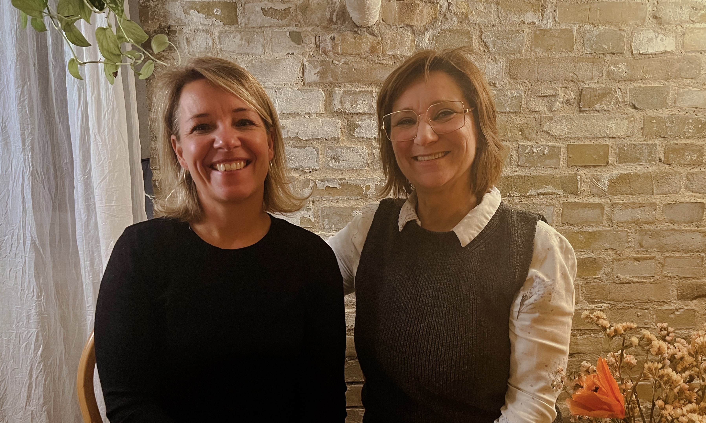

Er du uddannet social og sundhedsassistent med en drøm om at arbejde med gravide, fødende kvinder og deres familier?
Vi har designet et kursus som vil forberede og klæde dig på til et lige netop dette!
Kursuset udstyrer dig med de færdigheder og den selvtillid og viden, du behøver for at assistere jordemoderens arbejde og bidrage effektivt i optakten til og under fødslen, såvel som når de bliver forældre.
OVERBLIK
Vi dækker 3 forskellige områder for specialet:
- Fødemodtagelsen
- Fødegangen & Fødsel
- Post-partumforløb
Kurset forbereder dig på et job med mange varierende og spændende opgaver og fart over feltet!
Derudover giver kurset dig et grundigt indblik i, hvordan det er at være en del af et af de største begivenheder i deres liv, og hvad ens rolle er som SSA’er.
Det gør din prøveperiode og oplæringsfase mere overkommelig, da du, allerede inden jobstart, vil have kendskab til korrekte fagtermer og rutiner.
INDHOLD
Kurset vil bestå af 3 moduler
I modul 1 lærer du om din rolle som fødegangsassisten i fødemodtagelsen.
Fødemodtagelsen er en akutafdeling, og er dækket 24/7 af jordemødre, læger og social- og sundhedsassistenter. Det er typisk det første møde med hospitalet udover jordemoder konsultationer, og hvor gravide henvender sig, når der opstår akutte problemer eller bekymringer i graviditeten.
Efter dette modul, vil du føle dig tryg i opgaver som:
Og meget mere...
Her fortsætter det kliniske arbejde med jordemor, samtidig med at man lære parret at kende gennem de timer de er på stuen.
I modul 2 får du øget dine kompetencer til at kunne stå i akutte situationer og vide hvad din rolle er. Vi gennemgår alle aspekter af den normale fødsel samt de komplikationer der kan opstå undervejs
Efter dette modul, vil du føle dig tryg i opgaver som:
Og meget mere...
Post-partumforløbet på fødegangen består af:
Og meget mere...
Post-partumforløbet kan både være rolig eller akut, og det er derfor vigtigt som fødegangsassistent at holde hovedet koldt og kunne tage en selvstændig beslutning.
Det lærer du meget mere om i dette modul.
UNDERVISERE
Elaine Hetman
Social- og sundhedsassistent - 58 år
I søgen på egen karrieresti, har Elaine på egen hånd mærket, hvor frustrerende og svært det kan være at komme til at arbejde på en afdeling for gravide og fødende kvinder, uden erfaring i specialet.
Efter 17 år som social- og sundhedsassistent i psykiatrisk regi, var hun heldig at lande et job på et af Danmarks travleste afdelinger for graviditet, fødsel og kvindesygdomme.
Elaine har utallige gange oplevet udfordringer ved at rekruttere personale med baggrund i og viden om, hvad det vil sige at arbejde i dette spændende felt. Grundet lave ressourcer på afdelingerne, er oplæringen til tider mangelfuld, og jobbet kan derfor virke overvældende med så mange nye termer og rutiner.
Elaine så her en mulighed for at udvikle det kursus, hun selv manglede, da hun søgte job inden for feltet. Sammen med hendes dygtige kollega Charlotte, har hun designet Fødegangsassistenternes Kompetencekursus (FGA), for at give uddannede SSA’ere et fagligt løft inden for specialet om graviditet og fødsel.
Charlotte Timm
Social- og sundhedsassistent - 47 år
Charlotte har været social- og sundhedsassistent på fødegangen siden 2008, og har derfor en god forudsætning for at videregive sin viden og brede erfaring fra fødegangen, fødemodtagelsen og klinikken.
Charlotte har en stor passion for specialet og har sammen med Elaine, et stort ønske om at sprede budskabet om et spændende og varierende job som fødegangsassistent.
Hun har i mange år siddet i rekrutteringen og har i den forbindelse oplevet store udfordringer med at matche kompetencerne til den rolle en assistent har på fødegangen.
Med sin sprudlende personlighed, glæder Charlotte sig til at dele ud af hendes viden og kompetencer og er ikke i tvivl om at kurset vil forbedre muligheden for ansættelse og mindske risikoen for en overvældende jobstart.
PRIS
Prisen er 15.000 kr for alle 3 moduler inkl. Kaffe/te vand og snacks.
Beløbet kan betales i fuld eller i 3 rater af 5000 kr.
HVOR OG HVORNÅR
Kurset vil foregå på *********. Der er massere af parkering og offentlig transport lige til døren.
1. Modul
15. Marts 2023 kl. 18.00-21.00
2. Modul
15. Marts 2023 kl. 18.00-21.00
3. Modul
15. Marts 2023 kl. 18.00-21.00
INVESTER I DIG SELV OG DIN KARRIERE
Lyder det som noget for dig?
Der er begrænsede pladser, så tilmeld dig kurset i dag!
Skriv en email til: info@fga-kursus.dk med dit navn og lidt om dig selv og din karriere som SSA'er.
Så sender vi dig supplerende info og link til betaling.
Vi glæder os til at høre fra dig!
Mvh Elaine og Charlotte
SPØRGSMÅL
Har du nogle spørgsmål, så skriv endelig til os på info@fga-kursus.dk eller ring på +45 30 13 05 92.
